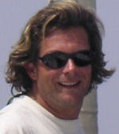
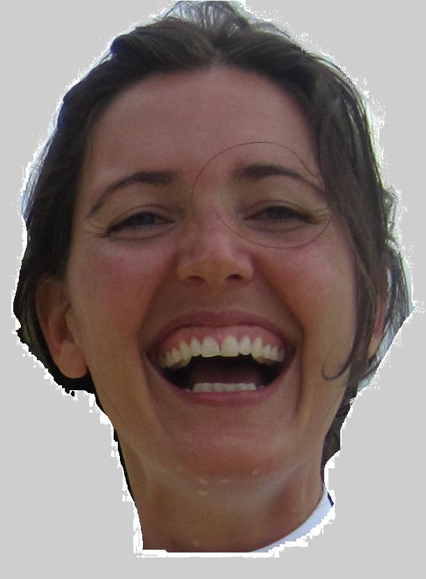

Entreprendre un grand voyage nécessite une logistique performante et une source de renseignements fiables. Voici une liste de personnes qui nous ont aidés, de sites que nous avons trouvé utiles ou de bateaux que nous avons croisés.
Alexis GUILLAUME, dit 'Capitaine Cothey'
C'est notre amiral, notre docteur es océans. On a débarqué un soir de 2004 à son cours. Quand il nous a demandé la raison qui nous poussait à suivre sa formation, on a répondu: "On va faire le tour de l'Amérique du Sud dans 3 ans.". Alexis ne s'est pas démonté et nous a bien aidé depuis. Non seulement il nous a mis le pied à l'étrier, ou, devrais-je dire, la main à l'écoute, mais il continue à nous conseiller chaque fois que nous parvenons à le joindre.

Alain CHEVAL, dit 'Voisin'
C'est lui qui nous a initié à la voile. En fait, c'était mon voisin durant mon enfance. C'est donc sur la mare de son arrière-cour qu'avec mon frère, nous nous initiions à l'optimiste à la fin des années 70. Bon, c'est maintenant un ami plein de bon sens marin. En plus, il est le représentant de Fountaine-Pajot en Belgique. Et comme on a justement acheté un BAHIA....
Pascal MARCEL, dit 'Pascal'
C'est lui qui m'a vendu le bateau et qui, depuis, en assure la gestion en attendant notre grand départ. Actif dans le métier depuis que la terre est ronde, Pascal possède une société de location de voiliers aux Antilles et, à ses heures perdues, il répond aux dizaines de questions qu'on se pose concernant l'aménagement du bateau. On peut dire que c'est vraiment un allié précieux dans notre projet car non seulement il dispose du bon sens marin mais, en plus, il sait de quoi il parle en matière d'entretien de bateau.
Christel
Christel est la cousine de Cécile. Elle nous a accompagné pendant quelques mois aux Fidji.

Voir son BLOGLE TOUR DU MONDE DE FRANCIS ET AGNES
Pour ceux qui sont intéressés par les Antilles, voilà des gens charmants que nous avons croisés lors de l'une de nos nombreuses formations. Ils sont partis en 2009 en Lagoon 38 pour un tour du monde.
LA FAMILLE MOTTE
L'inénarrable Dédé et sa famille de joyeux lurons ont malheureusement achevé leur tour de Polynésie.
BLUE CALLALOO
Nos amis Markus et Tina. Enfin un site en allemand !!!
LE VOYAGE DE THETYS
Bruno et Nathalie font le tour du monde à bord de leur grand cata.
INFOS
Evidemment, les forums voileux sont nombreux et de qualité inconstante. Mais lorsque vous hésitez entre éolienne et panneaux solaires, il est toujours intéressant de savoir ce qu'en pensent les autres. En général, s'il y a forum, c'est qu'il y a discussion. S'il y a discussion, c'est que les gens ne sont pas d'accord. Et donc, il est rare qu'un forum contribue de manière significative à trancher en faveur de l'une ou l'autre option mais, au moins, on en apprend plus et on se sent moins seul dans son ignorance....
Noonsite. Un site qui se réclame de Jimmy Cornell, et donc incontournable pour les tourdumondistes.
EQUIPEMENT
Inutile de préciser que l'équipement du bateau est un casse-tête inextricable. Enfin, il y a quelques sites intéressants.
Voilelec. Tout ce qu'il faut savoir sur l'électricité marine. Et même plus...
METEO
Plus on a de sources, mieux c'est...
Radar sur l'Europe. Pour la pluie.
Les conditions météos dans les antilles
Tout savoir sur les fichiers GRIB